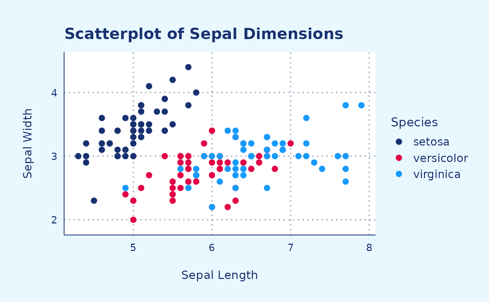

Introduction
introduction.RmdThis vignette provides examples on how to use different plotting functions.
Bar chart
mtcars |>
ggplot(aes(x = factor(cyl),
fill = factor(am))) +
theme_RR() +
geom_bar_RR() +
labs(title = "Number of Cars per Number of Cylinders",
x = "Number of Cylinders",
y = "Count") +
scale_fill_RR()Scatter plot (discrete palette)
Example 1
iris |>
ggplot(aes(x = Sepal.Length,
y = Sepal.Width,
color = Species)) +
theme_RR() +
geom_point_RR() +
labs(title = "Scatterplot of Sepal Dimensions",
x = "Sepal Length",
y = "Sepal Width") +
scale_color_RR()
Example 2
mpg |>
ggplot(aes(cty,
hwy,
color = factor(cyl))) +
theme_RR() +
geom_jitter_RR() +
scale_color_RR()Scatter plot (continuous palette)
Red
mtcars |>
ggplot(aes(x = hp,
y = mpg,
color = cyl)) +
theme_RR() +
geom_point_RR() +
labs(x = "Horse power",
y = "Miles per gallon",
fill = "Cylinders") +
scale_color_continuous_RR_red()Blue
mtcars |>
ggplot(aes(x = hp,
y = mpg,
color = cyl)) +
theme_RR() +
geom_point_RR() +
labs(x = "Horse power",
y = "Miles per gallon",
fill = "Cylinders") +
scale_color_continuous_RR_blue()Density plot
# Generate example data
set.seed(123)
data <- data.frame(
Group = rep(c("Group1", "Group2"), each = 200),
Value = c(rnorm(200, mean = 0, sd = 1), rnorm(200, mean = 2, sd = 1))
)
# Create density plot
data |>
ggplot(aes(x = Value, fill = Group)) +
theme_RR() +
geom_density_RR(alpha = 0.5) +
labs(x = "Value", y = "Density",
fill = "Group") +
scale_fill_RR()Line chart (simple)
# Load dataset
data("babynames")
data <- babynames |>
filter(name %in% c("Mary", "Ashley", "Amanda",
"Jessica", "Patricia", "Linda",
"Deborah", "Dorothy", "Betty")) |>
filter(sex=="F")
# Plot
data |>
ggplot(aes(x = year,
y = n,
group = name,
color = name)) +
theme_RR() +
geom_line_RR() +
scale_color_RR()Line chart (faceted)
tmp <- data |>
mutate(name2=name)
RR_dark_blue <- "#183271"
tmp |>
ggplot(aes(x = year,
y = n)) +
theme_RR() +
geom_line(data = tmp |> dplyr::select(-name),
aes(group = name2),
color = "grey",
linewidth = 0.5,
alpha = 0.5) +
geom_line(aes(color = name),
color = RR_dark_blue,
linewidth = 1.2)+
scale_color_RR() +
facet_wrap(~name) +
theme(axis.line = element_blank()) +
labs(y = "Count",
x = "Year")Heat map
Blue
# Dummy data
x <- LETTERS[1:20]
y <- paste0("var", seq(1,20))
data <- expand.grid(X=x, Y=y)
data$Z <- runif(400, 0, 5)
# Heatmap
data |>
ggplot(aes(X,
Y,
fill= Z)) +
geom_tile() +
theme_RR() +
scale_fill_continuous_RR_blue()Red
data |>
ggplot(aes(X,
Y,
fill= Z)) +
geom_tile() +
theme_RR() +
scale_fill_continuous_RR_red()